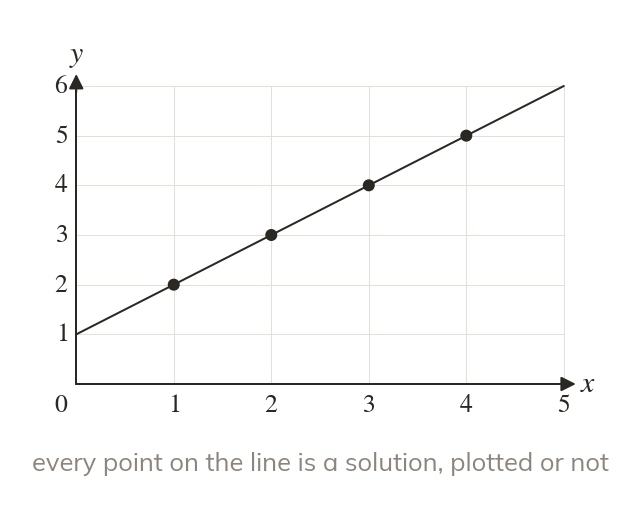
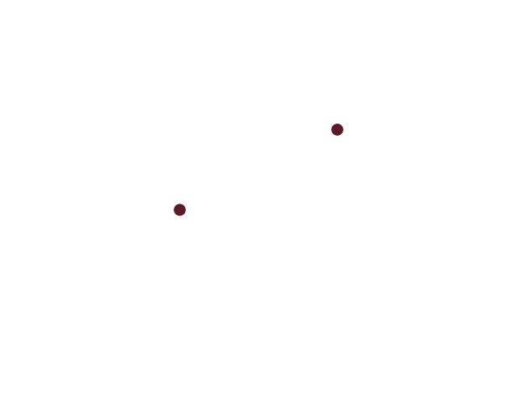

Every point on the line
Every point on the line satisfies its equation. A plotted point off the line signals an error.
Every point that lies on a straight line's graph satisfies that line's equation - the graph is the complete picture of every solution to the equation. A plotted point that does NOT lie on the line therefore signals an error somewhere in the working, not a valid extra point.